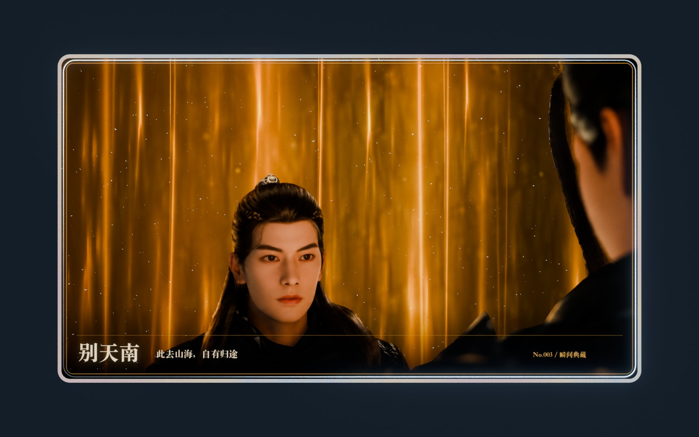
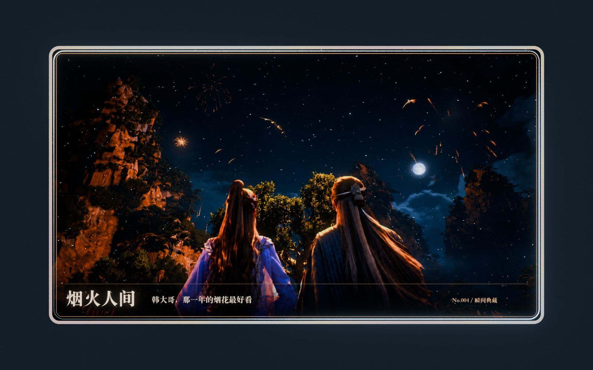
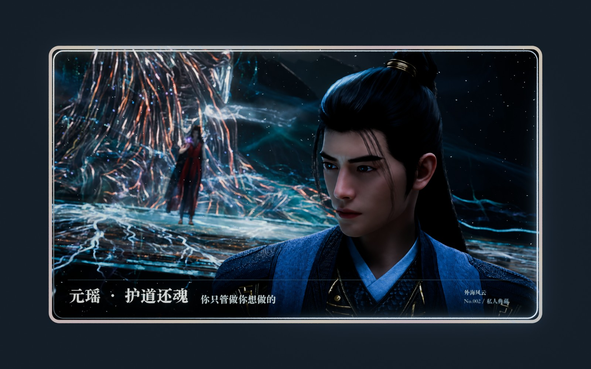

FOUR SCENES, KEPT IN LIGHT
留住，那一刻。
远行、烟花、护法、重逢。
逐张打开，拖动赏卡；点击「旋转入画」，随乐流转，慢慢定格。

01 / 场景典藏BEYOND TIANNAN
别天南↗
此去山海，自有归途
天南往事 · 韩立

02 / 场景典藏WHEN FIREWORKS BLOOM
烟火人间↗
韩大哥，那一年的烟花最好看
紫灵 · 灯会之夜

03 / 场景典藏A QUIET PROMISE
元瑶 · 护道还魂↗
你只管做你想做的
外海风云 · 护法之约
04 / 场景典藏
UNDER THE SAME MOON
月满相逢↗
千山赴约，只为与你相望
月下相逢 · 韩立与南宫婉
四幕光影，随时切换。
别天南向上掠过阵光，紫灵向烟花深处推进，元瑶从左向右流转，南宫缓缓拉远。也可暂停运镜，手动调整视角。
别天南向上掠过阵光，紫灵向烟花深处推进，元瑶从左向右流转，南宫缓缓拉远。也可暂停运镜，手动调整视角。
个人场景改编 · 参考画面与 AI 分层修复 · 每张卡内附来源档案
默认音乐为临时合成小样，非动画原曲；可导入本机音频。